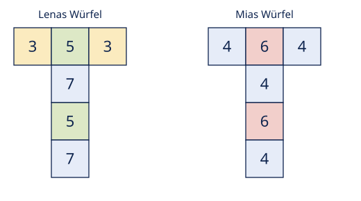
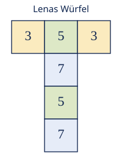
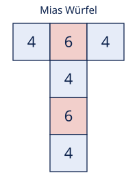
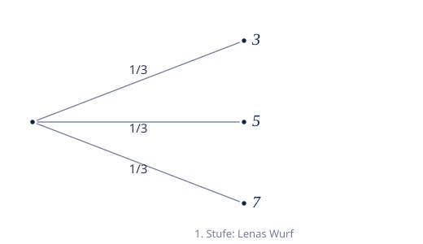
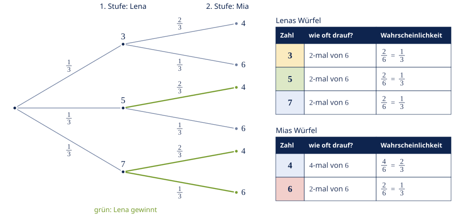
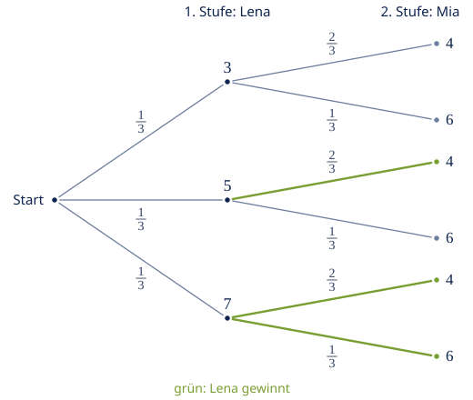
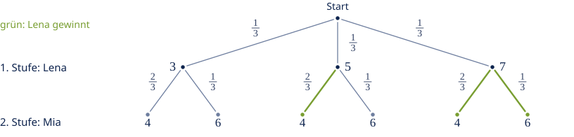
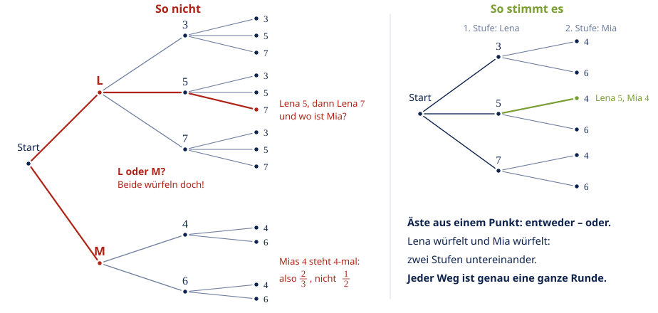

adege
adege
Good morning!
Nur das Schöne wird die Welt retten!
Fjodor Dostojewski
Nicht verzagen, Doc Alvers fragen!
Mathematik — Berufliches Gymnasium 11
Das Würfelspiel
Baumdiagramm und Pfadregeln — ganz langsam, Schritt für Schritt
Nicht verzagen, Doc Alvers fragen!
Kapitel 01
Worum geht es?
Ein Spiel mit zwei besonderen Würfeln
Nicht verzagen, Doc Alvers fragen!
Das Spiel in drei Sätzen
Lena und Mia würfeln mit zwei verschiedenen, selbst beschrifteten Würfeln
Zuerst würfelt Lena einmal, danach Mia einmal
Wer die größere Zahl oben hat, gewinnt die Runde
Unsere Fragen: Wie sieht das Baumdiagramm aus — und wie wahrscheinlich gewinnt Lena?
Nicht verzagen, Doc Alvers fragen!
Die beiden Würfel — ausgeklappt als Netz

Nicht verzagen, Doc Alvers fragen!
Was heißt zweistufig?
Es wird zweimal nacheinander gewürfelt — das sind zwei Stufen
Stufe 1 ist Lenas Wurf, Stufe 2 ist Mias Wurf
Im Baum heißt das: zwei Ebenen von Ästen, von links nach rechts
Jeder Weg von ganz links nach ganz rechts ist ein möglicher Ausgang des Spiels
Nicht verzagen, Doc Alvers fragen!
Kapitel 02
Die Würfel lesen
Zählen statt raten
Nicht verzagen, Doc Alvers fragen!
Lenas Würfel: sechs Flächen, drei Zahlen
| Zahl | steht wie oft auf dem Würfel? | Wahrscheinlichkeit |
|---|---|---|
| 3 | 2-mal von 6 | |
| 5 | 2-mal von 6 | |
| 7 | 2-mal von 6 |
Jede Fläche ist gleich wahrscheinlich — also einfach zählen: wie oft steht die Zahl drauf?
Kontrolle:

Nicht verzagen, Doc Alvers fragen!
Mias Würfel: sechs Flächen, zwei Zahlen
| Zahl | steht wie oft auf dem Würfel? | Wahrscheinlichkeit |
|---|---|---|
| 4 | 4-mal von 6 | |
| 6 | 2-mal von 6 |
Achtung: Die 4 steht viermal auf dem Würfel — nicht zweimal!
Kontrolle:

Nicht verzagen, Doc Alvers fragen!
Der wichtigste Trick: gleiche Zahlen zusammenfassen
Man könnte sechs Äste mit je zeichnen — das ist nicht falsch, aber unübersichtlich
Einfacher: gleiche Zahlen zu einem Ast zusammenfassen
Lena bekommt dann 3 Äste (3, 5, 7), Mia 2 Äste (4, 6)
Merke: Die Äste, die an einem Punkt starten, ergeben zusammen immer 1
Nicht verzagen, Doc Alvers fragen!
Kapitel 03
Den Baum zeichnen
Erst Lena, dann Mia
Nicht verzagen, Doc Alvers fragen!
Stufe 1: Lenas Wurf — drei Äste mit je 1/3

Nicht verzagen, Doc Alvers fragen!
Stufe 2: an jedes Ende kommt Mias Wurf
An jedes der drei Enden hängen wir Mias zwei Äste: 4 und 6
Mia würfelt immer mit demselben Würfel — also steht überall bei der 4 und bei der 6
Lenas Ergebnis ändert nichts an Mias Würfel — die Würfe sind unabhängig
Am Ende gibt es Wege durch den Baum
Nicht verzagen, Doc Alvers fragen!
Der fertige Baum

Nicht verzagen, Doc Alvers fragen!
Die Pfadregel: entlang eines Weges multiplizieren
Die Wahrscheinlichkeit eines Weges: alle Äste auf dem Weg malnehmen
Weg :
Weg :
Kontrolle: alle sechs Wege zusammen

Nicht verzagen, Doc Alvers fragen!
Kapitel 04
Wer gewinnt?
Alle sechs Ausgänge durchgehen
Nicht verzagen, Doc Alvers fragen!
Jeder Ausgang einzeln
| Weg | Lena | Mia | Wer gewinnt? | Wahrscheinlichkeit |
|---|---|---|---|---|
| 3 | 4 | Mia | ||
| 3 | 6 | Mia | ||
| 5 | 4 | Lena | ||
| 5 | 6 | Mia | ||
| 7 | 4 | Lena | ||
| 7 | 6 | Lena |
Lena gewinnt auf drei Wegen — auch die 7 schlägt die 6!
Nicht verzagen, Doc Alvers fragen!
Die Summenregel: passende Wege addieren
Alle Wege, bei denen Lena gewinnt, werden addiert
Gegenprobe Mia: — und
Unentschieden gibt es nicht: Die beiden Würfel haben keine gemeinsame Zahl

Nicht verzagen, Doc Alvers fragen!
Die typischen Fehler
Mias 4 mit statt — die 4 steht viermal auf dem Würfel
Entlang eines Weges addiert statt multipliziert
Den Weg vergessen — die 7 ist größer als die 6
Die Wege für Lenas Sieg multipliziert statt addiert
Nur einen Weg genommen statt alle drei
Nicht verzagen, Doc Alvers fragen!
Noch ein Fehler: Lena oder Mia?

Nicht verzagen, Doc Alvers fragen!
Entlang eines Pfades wird multipliziert — verschiedene Pfade zum selben Ereignis werden addiert.
Merksatz
Nicht verzagen, Doc Alvers fragen!
Das Rezept in fünf Schritten
1. Würfelnetze zählen: Wie oft steht jede Zahl auf dem Würfel?
2. Wahrscheinlichkeit je Zahl: Anzahl durch 6, dann kürzen
3. Baum zeichnen: erst Stufe 1, dann an jedes Ende Stufe 2
4. Pfadregel: entlang eines Weges malnehmen
5. Summenregel: alle passenden Wege addieren
Nicht verzagen, Doc Alvers fragen!
Fun Facts
Würfel gibt es seit mindestens 5000 Jahren — schon im alten Orient wurde gewürfelt
Der Statistiker Bradley Efron erfand Würfel, bei denen A gegen B, B gegen C — und C wieder gegen A gewinnt
Solche Würfel heißen nicht-transitiv: Wer zuerst wählen muss, verliert auf Dauer
Unser Spiel ist harmloser: Mit ist Lena nur knapp im Vorteil
Nicht verzagen, Doc Alvers fragen!
Jetzt ihr: die Zwillingsaufgabe
Pauls Würfel: 1, 1, 5, 5, 6, 6
Jonas' Würfel: 2, 2, 2, 4, 4, 4
a) Zeichnet das Baumdiagramm und schreibt an jeden Ast die Wahrscheinlichkeit
b) Wie groß ist die Wahrscheinlichkeit, dass Paul gewinnt?
Tipp: Geht genau das Rezept durch — Schritt für Schritt
Nicht verzagen, Doc Alvers fragen!
Lösung der Zwillingsaufgabe
Paul: 1, 5 und 6 je — Jonas: 2 und 4 je
Jeder Weg: — sechs Wege, zusammen 1
Paul gewinnt bei , , , — die 1 gewinnt nie
Nicht verzagen, Doc Alvers fragen!
Das Würfelspiel im Labor
Eure Würfel: Fläche antippen, neue Zahl wählen — alles rechnet sofort mit.
Nicht verzagen, Doc Alvers fragen!